Thesis Week 4/5
Adding Cannons, UI, and more!
For my progress the last two weeks, it's been pretty good. Based off my timeline I am a little bit behind since I wanted to have my demo all set to send out to people but I think I want to keep it in the oven for at least another week before more serious player testing. I had to spend a good amount of time keyframing the demo song, more than I thought as I also had to design the flow and think about how the player would interact. Using feedback I got from the previous class helped guide this along quite a bit. For the beta build I want to improve the performance on wireless mode as it is starting to lose smoothness as well as completing the particles system. I've learned that visual feedback is a huge component for a fast paced game like this. 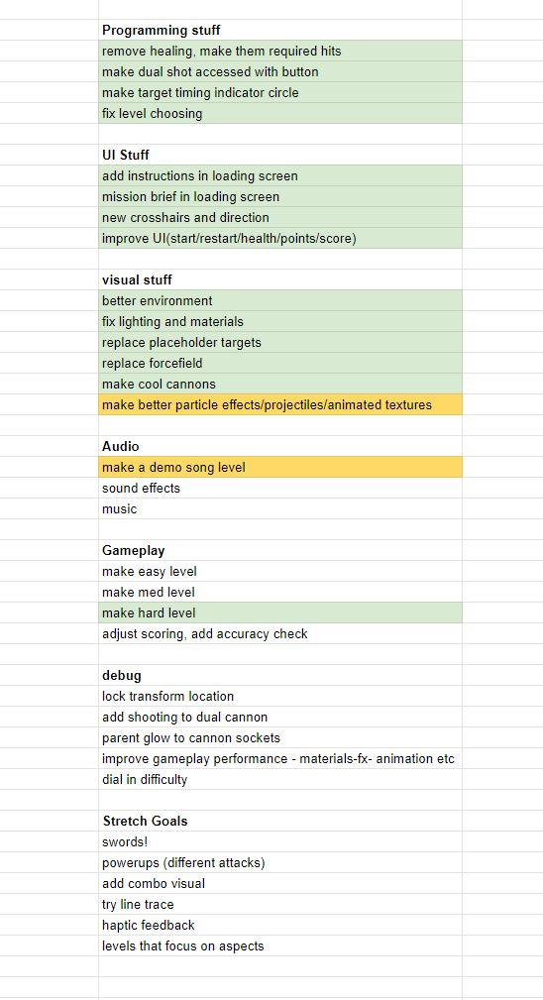 Down here you can see the crazy amount of layers I used that cleaverly reuses a lot of the animations. This also helps as a lot of the subsequences re-use many of the assets which help with performance. 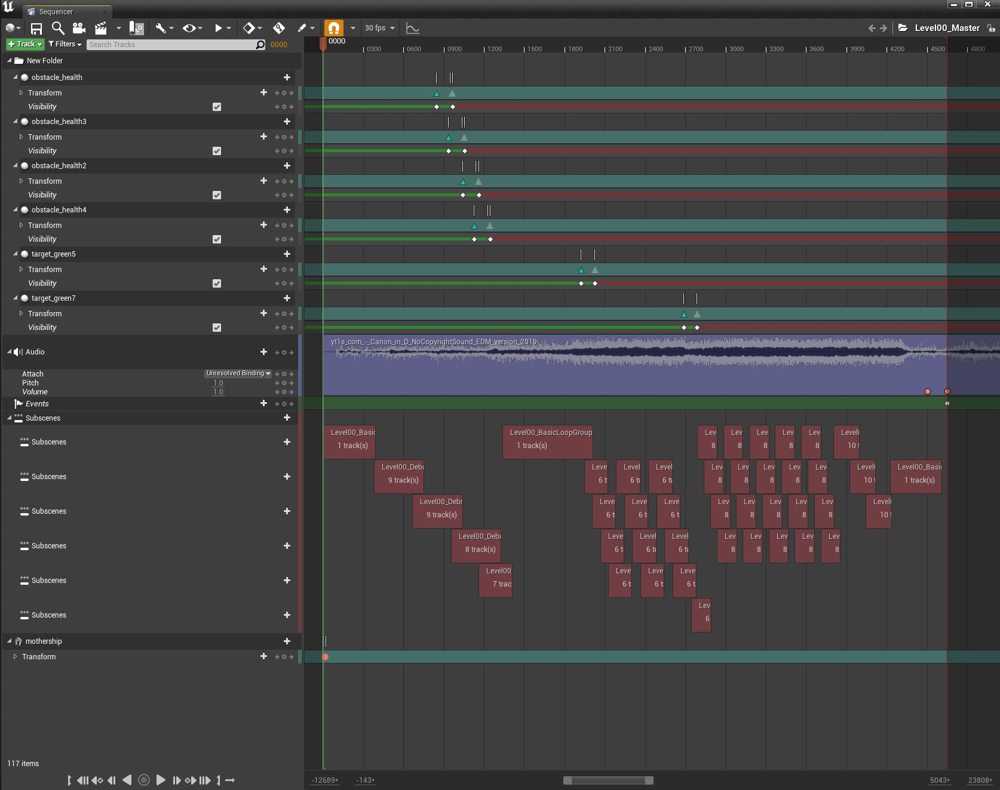 I spent a lot more time designing crosshairs than I wanted to but I was quite happy with how they came out. The idea was to base the shapes a little bit off the types of ships you would shoot and make it look pretty cool as well. 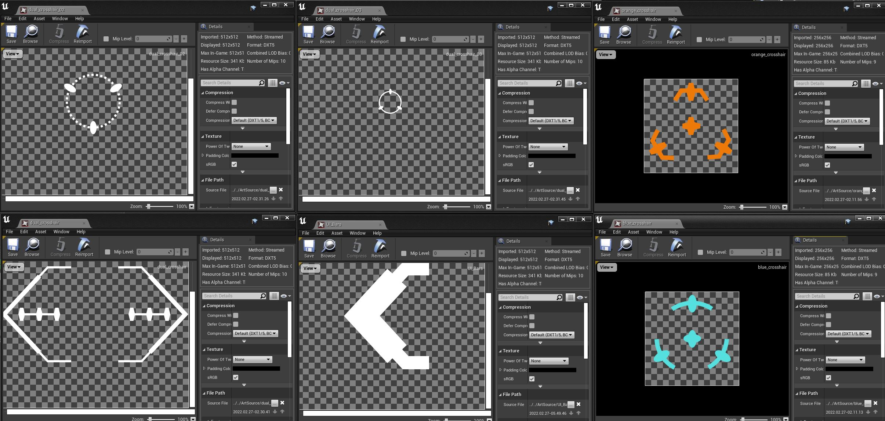 The design language I used is lots of hexagons because they are the bestagons. They seems to give an air of sci-fi since they make a lot of sense as a functional shape. It also matches well with shape language of the hangerbay. 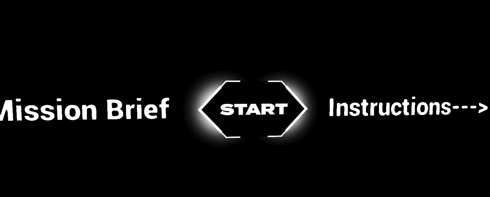 The restart button is pretty much the same as the start button, I also wanted to mention that I spent a long of time thinking of other words besides start, like begin, engage, ready player, but just went back to start since I liked the way it looked. 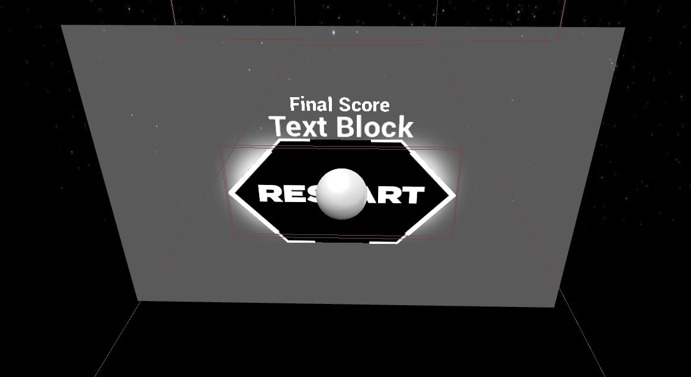 The health bar is again using the same style as the rest of the UI, for the bar, I decided to hide some of the rectangular shape which makes it look like you have less life when you start getting lower in health. In my screen recordings it's not showing up due to the nature of VR and capture ratios but it's there! 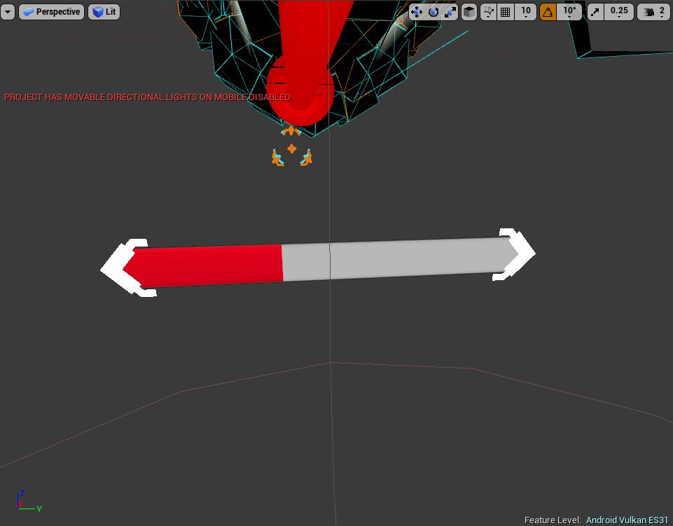 I did spend a good amount of time designing, rigging, and animating the models for the arm cannons since they are kinda the star of the show since they are literally right there in front of you. I want the players to really feel cool and excited to shoot stuff. I do need to spend some time to lock them together during their dual mode animation. I wanted to mention that even though the bulk of the coding is done, there is still always debugging to be done since I had to figure out a simple algorithm to make the transformation animation only trigger once.
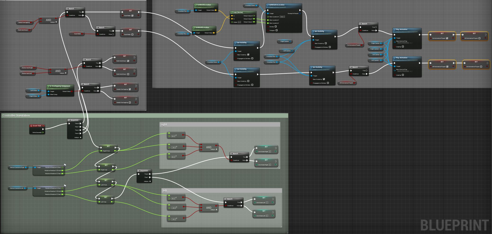
Also here's a view on a nice big block of code for just the player character, each of the targets and other things in the level have their own bodies of code as well!
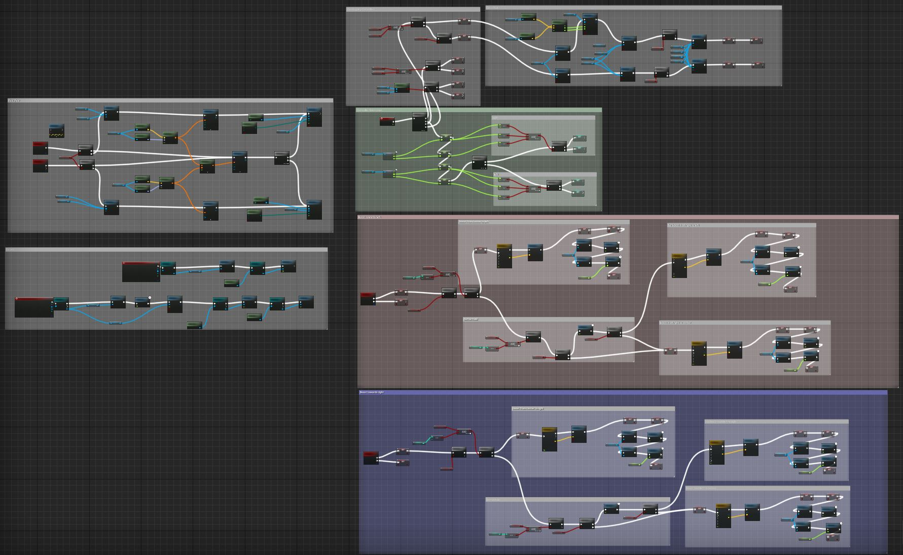
UE4 is pretty cool since you get to combine code with visuals which seem to be the perfect symphony of a tool for me. Here's a little sneakpeak of the backend.
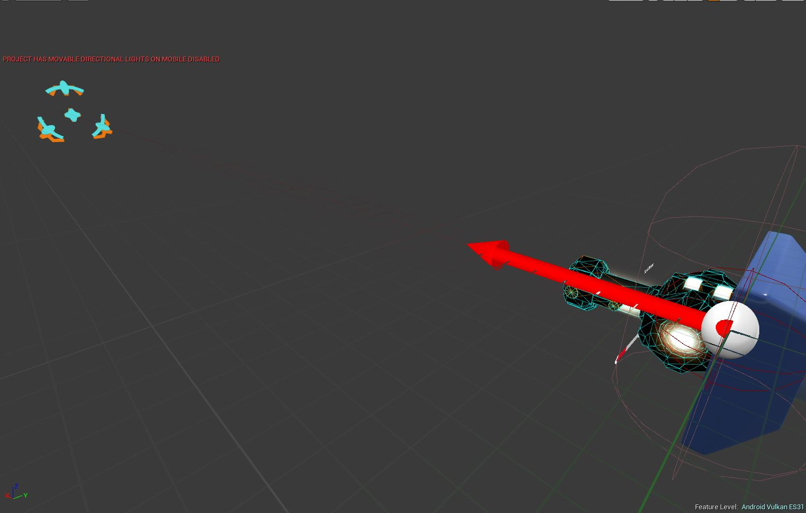
So yeah I will say that I am really close to completing the alpha and should be ready to send out the beta for testing very soon! Particles, optimization, and some other little bug fixes and we'll be good to go!
I wanted to mention that even though the bulk of the coding is done, there is still always debugging to be done since I had to figure out a simple algorithm to make the transformation animation only trigger once.
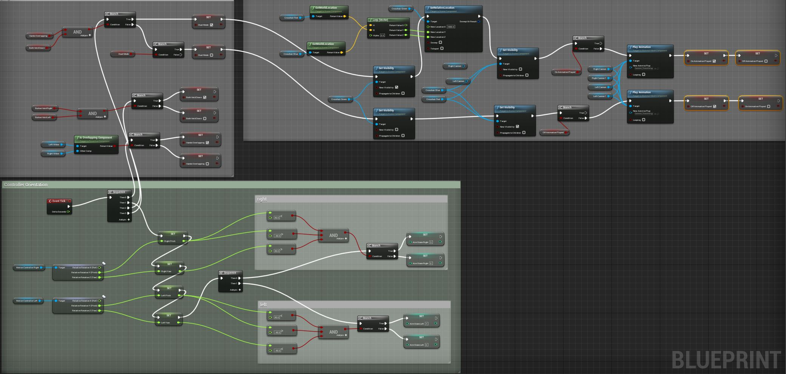
Also here's a view on a nice big block of code for just the player character, each of the targets and other things in the level have their own bodies of code as well!
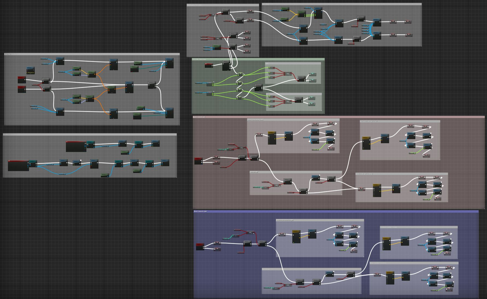
UE4 is pretty cool since you get to combine code with visuals which seem to be the perfect symphony of a tool for me. Here's a little sneakpeak of the backend.
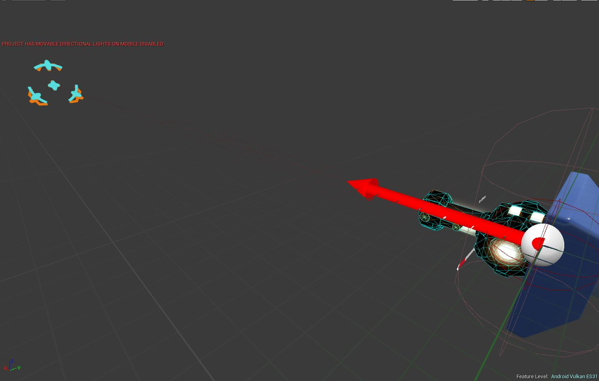
So yeah I will say that I am really close to completing the alpha and should be ready to send out the beta for testing very soon! Particles, optimization, and some other little bug fixes and we'll be good to go!
home
while (!deck.isInOrder()) {
print 'Iteration ' + i;
deck.shuffle();
i++;
}
print 'It took ' + i + ' iterations to sort the deck.';